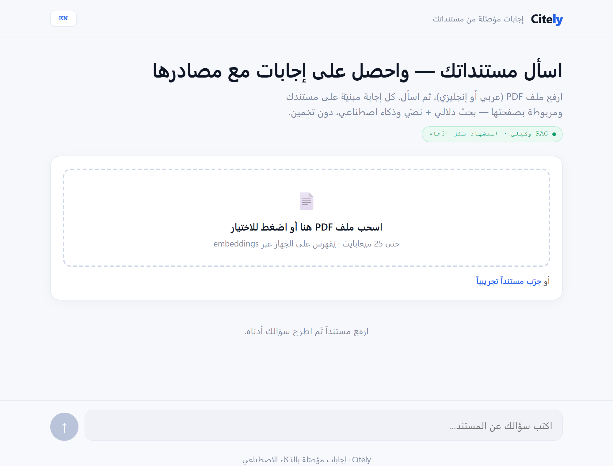
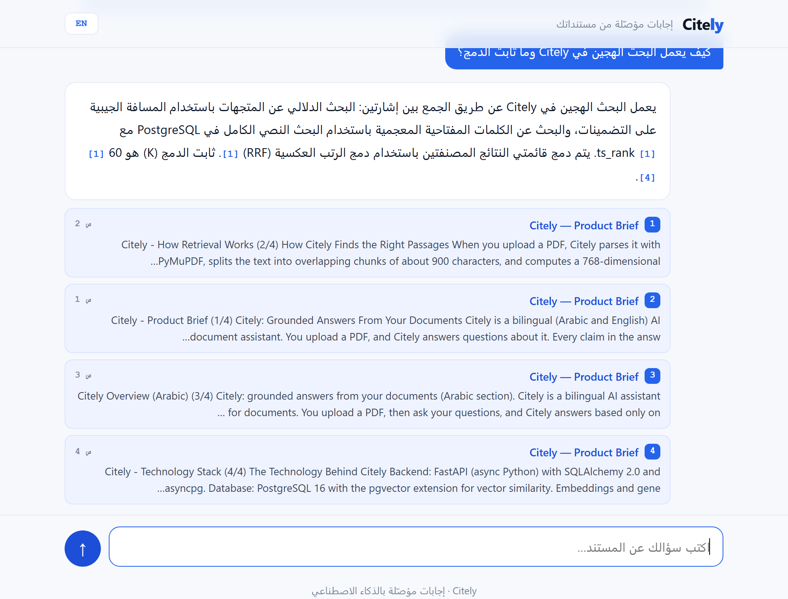
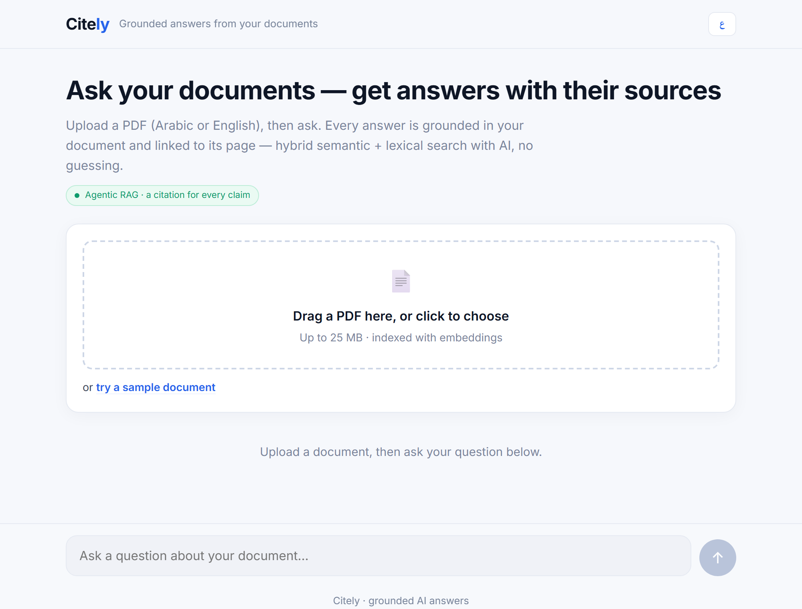

مساعد مستندات ثنائي اللغة (عربي/إنجليزي): ترفع ملف PDF فتحصل على إجابة مبنيّة على مستندك وحده، وكل معلومة فيها مرفقة باستشهاد يشير إلى المقطع المصدر وصفحته، بلا هلوسة. يعتمد على بحث هجين وتدفّق إجابة شفّاف يبثّ خطواته (استرجاع ← مصادر ← كتابة) وإجابته لحظياً. A bilingual (Arabic/English) document assistant: upload a PDF and get an answer grounded in your document alone, with every claim carrying a citation to the exact source passage and page — no hallucination. Built on hybrid search and a transparent, streamed answer flow (retrieve → sources → write) shown live.
بنيتُ Citely لأعالج أكبر عيوب مساعدات المستندات: إجابات تبدو واثقة لكنها مُختلَقة. في Citely كل جملة في الإجابة مربوطة بمصدرها في مستندك (بالمقطع والصفحة)، فتتحقّق بنفسك بدل أن تثق ثقة عمياء. I built Citely to fix the biggest flaw in document assistants: confident-sounding answers that are actually fabricated. In Citely every sentence is tied to its source in your document — passage and page — so you verify instead of trusting blindly.
ترفع ملف PDF (عربياً أو إنجليزياً)، فيُحلَّل ويُقطَّع وتُحسَب له embeddings تُخزَّن في PostgreSQL عبر pgvector. وعند السؤال يجري بحث هجين يدمج الإشارة الدلالية (تشابه المتّجهات) والإشارة المعجمية (بحث نصّي كامل في PostgreSQL) بخوارزمية Reciprocal Rank Fusion. ثم يتولّى الوكيل صياغة الإجابة من المقاطع المسترجَعة وحدها، وتبثّها كلمةً كلمة مع بطاقات المصادر. You upload a PDF (Arabic or English); it's parsed, chunked, and embedded into PostgreSQL via pgvector. At question time a hybrid search fuses the semantic signal (vector similarity) and the lexical signal (PostgreSQL full-text search) with Reciprocal Rank Fusion. The agent then composes the answer from the retrieved passages only, streaming it token-by-token alongside source cards.
الواجهة ثنائية اللغة بالكامل مع دعم RTL/LTR، وتُظهِر خطوات الوكيل (استرجاع ← مصادر ← كتابة) أثناء عملها — لتكون التجربة شفّافة بقدر ما هي موثّقة. المشروع مبنيّ من الصفر بمعمارية نظيفة ومُحوّى بـ Docker. The interface is fully bilingual with RTL/LTR support, and surfaces the agent's steps (retrieve → sources → write) as they happen — making the experience as transparent as it is grounded. The whole thing is built from scratch with clean architecture and containerized with Docker.
لقطات حقيقية من التطبيق وهو يعمل محلياًReal screenshots of the running app



FastAPI (async) فوق PostgreSQL + pgvector، مع طبقة خدمات تفصل الفهرسة عن الاسترجاع عن الوكيلFastAPI (async) over PostgreSQL + pgvector, with a service layer separating indexing, retrieval, and the agent
// تدفّق غير متزامن بالكامل · SQLAlchemy 2.0 + asyncpg app/ ├─ api/ documents (رفع · فهرسة خلفية) · chat (بثّ SSE) ├─ services/ │ ├─ indexing PyMuPDF → تقطيع منزلق (900/150) → embeddings (دفعات) │ ├─ retrieval بحث متّجهي (cosine) + نصّي (ts_rank) → دمج RRF │ └─ agent استرجاع → مصادر → توليد مُستشهِد (بثّ) ├─ ai/gemini embeddings (768-بُعد) + توليد بالبثّ └─ web/ واجهة SPA ثنائية اللغة (RTL/LTR) PostgreSQL + pgvector: documents حالة · تقدّم · عدد الصفحات/المقاطع chunks content · embedding Vector(768) · content_tsv (GIN) فهرس متّجهي (cosine <=>) + فهرس نصّي كامل (tsvector)
استعلامان متوازيان: تشابه cosine عبر pgvector، وترتيب ts_rank عبر بحث PostgreSQL النصّي الكامل (websearch_to_tsquery)، يُدمجان بـ Reciprocal Rank Fusion لقائمة واحدة أدقّ.Two parallel queries: cosine similarity via pgvector and ts_rank via PostgreSQL full-text search (websearch_to_tsquery), fused with Reciprocal Rank Fusion into one sharper ranked list.
يُلزَم النموذج بوضع [n] بعد كل جملة، وتعرض الواجهة بطاقة لكل مصدر فيها عنوان المستند والصفحة ومقتطف منه، فيتحقّق القارئ من كل معلومة في لمحة.The model must place [n] after each sentence, and the UI shows a card per source with the document title, page, and a snippet — so the reader can verify every claim at a glance.
يبثّ الوكيل خطواته (استرجاع ← مصادر ← كتابة) لحظياً عبر SSE، فيرى المستخدم سير الاستدلال لا مجرّد نتيجة نهائية، وهي شفافية تبني الثقة.The agent streams its steps (retrieve → sources → write) live over SSE, so the user sees the reasoning unfold, not just a final output — transparency that builds trust.
الواجهة تتبدّل بين العربية والإنجليزية باتجاه صحيح، والإجابة تُكتَب بلغة السؤال نفسها، والبحث يعمل على مستندات بأي من اللغتين عبر embeddings متعدّدة اللغات.The UI flips between Arabic and English with correct direction, the answer is written in the question's own language, and search works on documents in either language via multilingual embeddings.
تحليل بـ PyMuPDF، ثم تقطيع منزلق بتداخل، وحساب embeddings على دفعات في مهمّة خلفية مع تتبّع التقدّم، فيبقى الرفع سريعاً ومعالجة المستندات قابلة للتوسّع.PyMuPDF parsing, overlapping sliding-window chunking, and batched embedding in a background task with progress tracking — keeping upload snappy and ingestion scalable.
FastAPI + SQLAlchemy 2.0 + asyncpg، مع جلسات غير متزامنة وفهارس مُحسّنة (GIN للنصّ، فهرس متّجهي للتشابه) — ومُحوّى بالكامل بـ Docker للتشغيل والنشر.FastAPI + SQLAlchemy 2.0 + asyncpg, with async sessions and tuned indexes (GIN for text, a vector index for similarity) — fully containerized with Docker for run and deploy.
| الخادمBackend | FastAPI (async) · بثّ SSE عبر StreamingResponseSSE via StreamingResponse |
| قاعدة البياناتDatabase | PostgreSQL 16 · pgvector · بحث نصّي كامل (tsvector · GIN)full-text search (tsvector · GIN) |
| الوصول للبياناتData access | SQLAlchemy 2.0 (async) · asyncpg |
| الاسترجاعRetrieval | متّجهي (cosine) + معجمي (ts_rank) · دمج RRF (K=60) · top-k=6vector (cosine) + lexical (ts_rank) · RRF fusion (K=60) · top-k=6 |
| الذكاء الاصطناعيAI | Google Gemini · embeddings (768-بُعد) + توليد بالبثّembeddings (768-dim) + streaming generation |
| معالجة المستنداتDocuments | PyMuPDF · تقطيع منزلق (900 حرف / تداخل 150)sliding-window chunking (900 chars / 150 overlap) |
| الواجهةFrontend | SPA ثنائية اللغة (RTL/LTR) · fetch + ReadableStream لقراءة SSEbilingual SPA (RTL/LTR) · fetch + ReadableStream for SSE |
| التشغيل والنشرRun & deploy | Docker · docker-compose · منشور حيّاً على Render (blueprint)deployed live on Render (blueprint) |